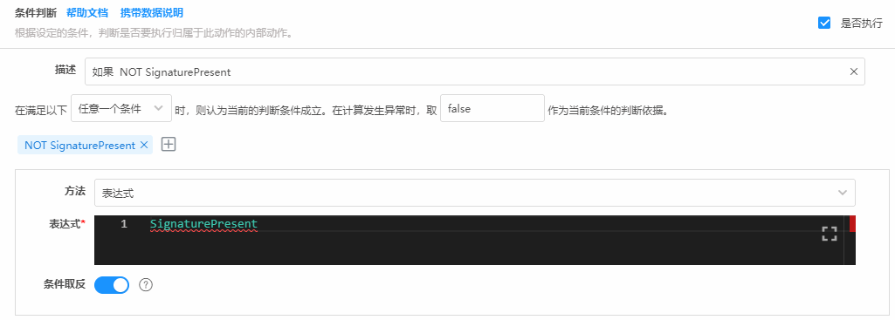
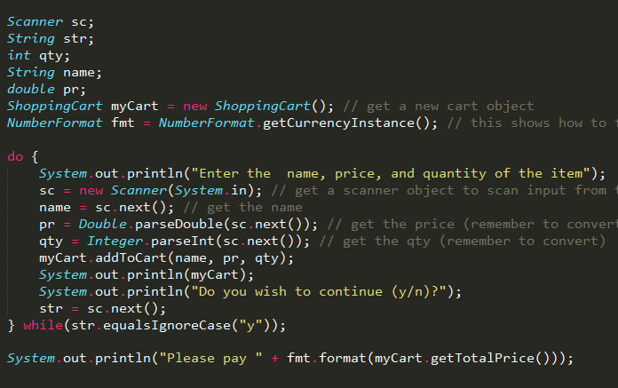
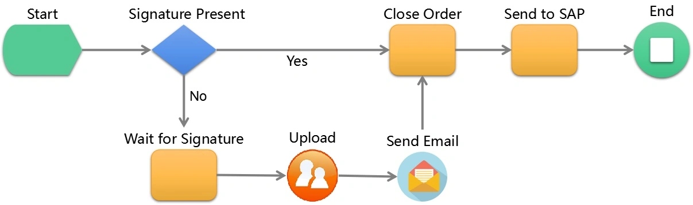
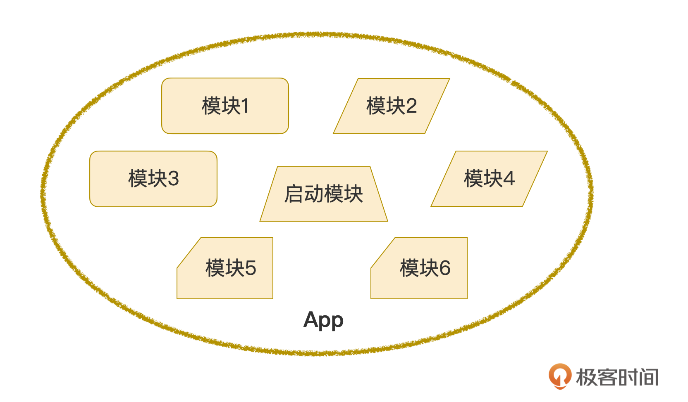
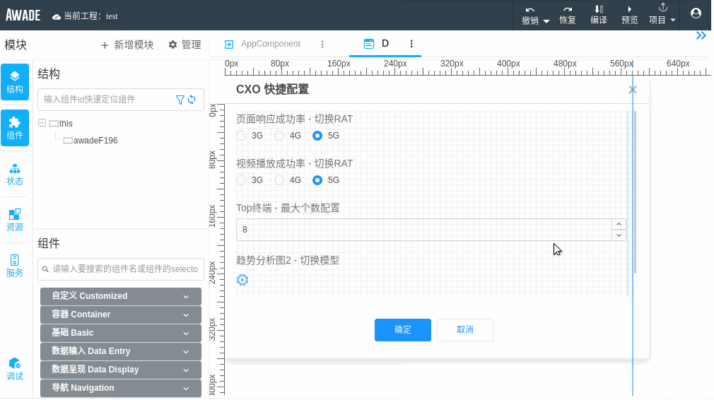
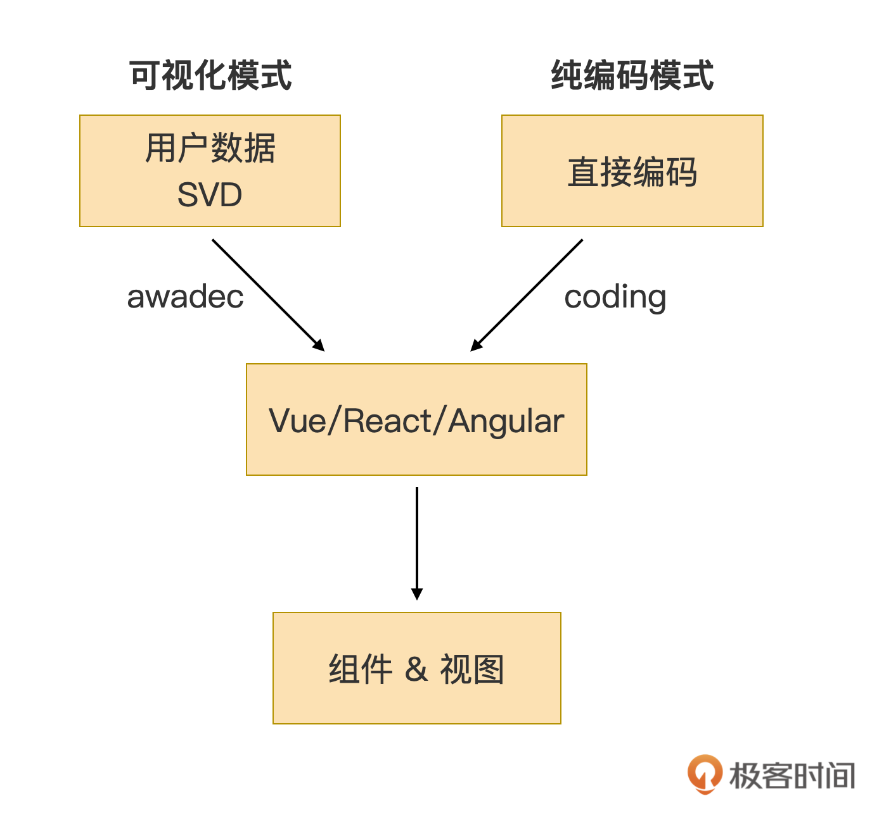
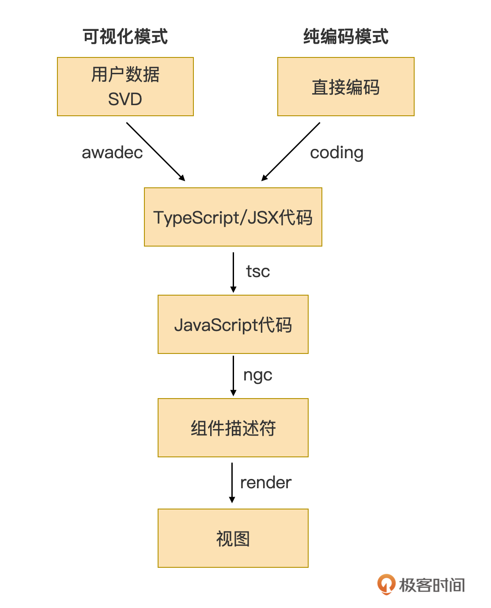

- 00 开篇词｜抛开争论，先来看看真正的低代码.md.html
- 01｜低代码平台到底是什么样的？.md.html
- 02｜低代码到底是银弹，还是行业毒瘤？.md.html
- 03｜低代码的天花板：一个完备的低代码平台应该具备哪些条件？.md.html
- 04｜演进策略：先发展通用能力还是先满足业务需求？.md.html
- 05｜基础设施 ：启动低代码平台研发之前，你需要有什么家底？.md.html
- 06｜踏出新手村便遭遇大Boss：如何架构低代码的引擎？.md.html
- 07｜结构化代码生成法：代码如何生成代码？.md.html
- 08｜布局编辑器：如何做到鱼和熊掌兼得？.md.html
- 09｜属性编辑器：如何解除Web组件属性与编辑器的耦合？.md.html
- 10 可视化编程：如何有效降低App前后端逻辑开发的技能门槛？.md.html
- 11｜亦敌亦友：Low Code与Pro Code混合使用怎样实现？.md.html
- 12 业务数据：再好的App，没有数据也是白搭.md.html
- 13｜多人协同编辑：野百合的春天为啥来得这么晚？.md.html
- 14｜编辑历史：是对Git做改造，还是另辟蹊径？.md.html
- 15｜低代码平台应该优先覆盖应用研发生命周期中的哪些功能？.md.html
- 16｜扩展与定制：如何实现插件系统并形成生态圈？.md.html
- 17｜兼容性问题：如何有效发现兼容性问题？.md.html
- 18｜兼容性问题：如何有效解决兼容性问题？.md.html
- 总结与展望｜低代码之路，我们才刚刚开始.md.html
- 捐赠
11｜亦敌亦友：Low Code与Pro Code混合使用怎样实现？
今天我们来聊聊低代码平台中的纯代码，理一理这对欢喜冤家的恩怨情仇。
一般的低代码平台，总爱宣传自己开发过程需要编码的地方是多么多么少，甚至已经消灭了所有代码。久而久之，不免给人一种感觉，如果低代码平台上还有代码的存在，就会显得很失败。低代码是新欢，纯代码是旧爱，有了新欢，抛弃旧爱，这样可不好。
其实，把低代码平台上的纯编码开发模式视为洪水猛兽，大可不必。编码有编码的优势，毕竟可视化不是低代码的目的，高效率才是。如果高低代码的结合使用可以提升开发效率，哪怕是只能在特定条件下提升效率，那都可以纳入低代码平台的能力范围。
为啥还要编码？
最开始，我们思考一个问题，既然可视化开发是低代码平台的特色和卖点，那为啥低代码平台还要提供纯编码入口呢？
你还记得【第 3 讲】中我描绘的天花板级别的低代码平台吗？其中一条标准和低代码平台的用户有关。天花板级别的低代码平台需要能支持各种技能水平的人同时使用。
也就是说，高技能水平的开发者也是低代码平台的目标用户。在这部分用户专业领域范围内的内容，他们更想要采用直接编码的开发模式。除开对这个人群来说，直接编码与可视化开发模式相比的效率因素，一个可能的原因是他们需要有职业获得感，以及出自人性深处的那种“不羁放纵爱自由”的叛逆心理。
我们前面说过，可视化模式凝聚了各路专家的经验，这个经验约束了你必须先这样做，然后再那样做，才能获得更好的效率和更优质的 App。从另一个角度看，就是强制规定了我们开发的套路，你只能这么做。这对于领域小白来说，当然是很舒服的，只要照做就能得到最优解。但高技能水平者往往有自己的见解，期望按照自己的思路来实现，给他们一个代码编辑功能，让他们自由发挥是更好的解决方法。
当然，不见得所有的低代码平台都要做到天花板上去，那发展中，甚至是刚起步的低代码平台，是否就没有纯编码开发的要求了呢？
当然不是。如果说天花板低代码平台的编码模式是锦上添花，为满足一部分人的需要而开放的能力，但对发展中的低代码平台来说，则是刚需，某些时候甚至是雪中送炭。发展中的低代码平台由于可视化开发能力不完善，难免出现搞不定的情况，这种情况往往就需要纯编码模式来兜底。
即使在低代码平台成熟之后，使用纯代码作为一种兜底策略，依然是一种非常好的选择。因为任何事情都逃脱不了二八原则，低代码的可视化模式再好，也只能适用于 80% 的场景。剩余的那 20% 边边角角的场景，如果硬上可视化模式，反而可能吃力不讨好，所以我们把那剩下的 20% 的场景留给纯代码来兜底，是一种很明智的选择。
因此，无论是在发展中的低代码平台还是已经比较成熟的低代码平台，可视化模式和纯代码模式的混合开发，都是有很明确的需要的。
说到采用纯代码方式来实现兜底策略，我在这里自爆一点我们低代码平台 Awade 的黑料。我在【第 7 讲】中介绍了 Awade 的结构化代码生成法，它有一个很重要特点，就是可以生成和人类手写的代码相似的、人能读得懂的代码。多数低代码平台并不会考虑生成对人类友好的代码，为啥 Awade 要这么做呢？
这是因为在 MVP 的初期，我们内部对 Awade 提供的可视化模式的端到端交付能力还心存疑虑，我们也不确定它能不能搞得定。于是心想如果人能读得懂、改得了 Awade 生成的代码，那万一开发哪个 App 时 Awade 搞不定，起码我们还能把代码导出来，手工继续完成剩余部分，不至于烂尾。
后来的事实证明我们的担心完全是多余的，Awade 提供的可视化模式可以很好地应对各种 App 的开发需要。即使如此，它能生成对人友好的代码的特性，并没有浪费，这个特性让 Awade 可以实现高低代码模式的无缝切换，这一点我们等会儿还会再说。
高低代码如何混合开发？
要注意，在我自爆的黑料中，我们原本打算使用的可视化模式搞不定时就人工接着搞的方式，实际上也是一种高低代码结合的方式（高代码指的也就是纯代码）。只不过，这是一种很无奈的、很被动的混合方式，甚至可以说是一块遮羞布。
那么，低代码平台如何优雅地实现高低代码混合开发呢？
在前面几讲中，我已经多次提到，低代码平台的开发过程是有代码参与的，代码是低代码平台的副产品，所以在低代码平台上能否实现高低代码混合开发，从来就不是一个问题。真正的问题在于要不要开放纯代码接口，这一点我们前面已经给出结论了。另一个问题是如何实现混合开发，这正是我们现在要讨论的问题。
形形色色的表达式是高低代码混合最常见的一种方式了，因为这是可视化模式的主要盲区。表达式的作用，往往就是作为一个小功能点，而如果我们用可视化模式实现一个真假表达式这样的小功能点，就像是拿大炮打蚊子，性价比极低。
可视化模式更适用于实现连续性的、复杂的逻辑。一个实际的 App 会包含许多这样的大块逻辑，并且这些大块逻辑之间充满了缝隙，需要使用表达式来“粘连”在一起。比如下面这个场景就是一个很好的例证：

这个图展示的是用可视化方式编排一个逻辑判断的功能。我们都知道，逻辑判断功能最关键的一个点是要判断真假，但是用可视化方式来编排出真假的结果，却并不容易。因此，这个例子中，我们直接就让应用开发人员填写一个表达式，这个表达式将用于计算出这个条件的真或假。这个例子给出的混合方式非常自然，即使是没有多少开发经验的应用，也能很快掌握。
还是同一个例子，我们来看看采用纯可视化的方式是如何来完成真假判断的：
这张图是在判断一个数组是否为空（即长度是否为 0），可以看到，纯可视化方式在这里就显得啰嗦一些了，这样的一个表单最终只生成了 array.length == 0 这样一个表达式。
那么常见的表达式还有哪些呢？除了真假表达式外，还有三目运算、正则表达式、求值表达式、逻辑运算、数值计算等，很多，我就不一一列举了。
这些表达式都很适合与可视化模式混合使用，不仅可以作为可视化模式的有用补充，在生成代码时，往往还起到直接表达业务逻辑的关键作用。表达式与可视化混用是如此常见，以至于如果我不指出来，你也许都不会注意到这也是一种混用场景。
也许你会反驳：表达式不算是高代码。那接下来，我们就来说说有点“代码含量”的情形：代码块。
可视化编程是可视化模式中最难做好的一个功能点。在上一讲中，我给出了一种通过形象化的方式来表达和编排程序逻辑的方法，但是那种方式主要是给程序编程能力很弱的人使用的，一般能写点代码的人会更乐意直接编码。
我认为，代码块就是可视化编程功能中实现高低代码混合的最好方式。我这里说的代码块指的是若干行完整代码组成的、有特定功能的程序块，一个函数可以包含一个或者多个代码块。比如下面这个示例图中就包含了 3 个代码块：

在一个完整逻辑流程中，可视化逻辑块和代码块可以按需地交织混合在一起，如下图：

图中橙色块就是纯代码块，其他块则是可视化逻辑块。这种混合方式完全是由应用开发人员按需编排出来的：有可能是开发人员觉得某个功能使用可视化块效率更高；也有可能是他不知道如何写出符合预期的代码块，而不得不用可视化块；还有可能是没有合适的可视化块，而不得不使用代码块顶替；甚至有可能随编排时的心情状况随机挑选了一种方式。总之，可视化编排器需要能支持这样一种高低代码混合的方式。
也许你还要反驳：代码块的“代码含量”依然不足，不能算作高低代码混合。
那接下来，我们就说说纯度达到 24K 的高低代码混合方式。表达式也好，代码块也罢，都是在可视化模式为主导的开发流程中，使用少量代码作为辅助的方式，也难怪会被质疑这样的方式不是纯编码。
那“代码含量”纯度为 24K 的开发方式是啥呢？总不能和我前面自爆的 Awad 黑料一样，把 App 整个工程的代码都生出来，让应用开发导入到 VSCode 这样的 IDE 继续完成剩余的开发吧？
揭开谜底之前，我先介绍一下我为切分 App 工程代码设定的粒度：模块。一个完整的 App 工程由多个模块组成：

你可以从这张示意图中看到：
- 一个 App 工程至少包含一个模块，也就是图中最中间的启动模块，启动模块有且只有一个；
- 模块有多种不同的类型，而且各类型模块的数量按照 App 所需创建；
- 模块是 App 工程的唯一一种粒度。
其实还有几点要注意，不过这几点与这讲内容关系不大，所以我没有画到这张示意图上，但作为模块的重要知识，我们略微扩展一下：
- 模块之间可以相互引用，一个模块可以引用多个其他模块，也可以被多个模块引用；
- 启动模块由框架直接引用；
- 模块是实现 SPA（单页面应用）、应用自定义组件等的重要入口。
为了减少 App 开发的学习成本，我吝啬地只用了模块这一种粒度，它承载了切分 App 工程、实现 App 代码复用、做各种关键功能入口的职能。关于模块如何做到如此复杂的职能、但又以极轻量的面貌展示在 App 开发人员面前，如果你觉得有需要详细说明，可以在留言区留言，有需要的话我会用专门一讲来介绍。
好了，收回来。介绍了模块后，不需要我多说，你应该已经猜到了，我所说的“代码含量”纯度为 24K 的开发方式，就是按需将一个模块的开发方式从可视化方式，切换为纯代码模式：

上面动画演示了将当前模块的开发模式，从可视化模式切换为纯编码模式的过程。通过这样的操作方式将一个模块彻底转为纯编码模式之后，App 开发人员就可以按照纯代码的方式，继续完成这个模块剩余的开发工作了。
由于这里我生成的代码是基于 Angular 的，因此 App 开发人员必须严格按照 Angular 的方式来编码。他可以按需创建新的 Angular 组件，或者引用已有的组件来完成他剩余的开发工作。这是一种非常纯粹的编码开发模式了。
提示：如果你熟悉 Angular，你会发现我这里提及的“模块”这个概念和 Angular 里的“组件”的概念是对等的。
特别需要注意的是，切换成纯编码模式这个动作只影响当前模块，其他模块依然保持原有开发模式。并且，通过纯编码开发的模块可以继续被其他模块引用，它也可以继续引用已有的模块。也就是说，从 App 整体来看，它的开发模式就出现了高低代码混合的局面。
高低代码如何混合编译？
老生常谈，我再强调一遍，低代码平台的开发过程是有代码参与的。因此，如果低代码编译器能够生成对人类友好的代码的话（方法见【第 7 讲】），把一个模块切换为纯编码方式的难度并不大。难的是如何实现高低代码混合编译，进而实现高低代码所见即所得的效果。
接下来我们就来简要说说如何实现，限于篇幅，只能把思路说清楚，而无法给出代码级的指导，如果你实现过程碰到了什么问题，欢迎在留言区提问。
我在【第 6 讲】的“生成代码总体流程”的部分有提到，如果低代码平台实时渲染视图采用的是直接法，也就是直接生成浏览器能识别的代码并渲染出视图，实现高低代码混合下的所见即所得效果就会非常麻烦。反之，如果采用的是间接法，即先生成某种 MVVM 框架下的代码，再实时编译成浏览器能识别的代码并渲染视图的方式，实现所见即所得则会简单许多。

间接法下从代码到视图的流程
从实现的流程图上看，采用间接法时，高低代码混合模式的编译流程几乎是一致的，因此实现起来非常容易。这个流程图是以代码为视角来画，如果改从所见即所得效果的实现过程来看的话，这个图应该进一步细化为这样：

这张图中指出了各个关键环节之间采用了哪个编译器来处理：
- 编译开始于用户配置数据 SVD，使用低代码平台的编译器 awadec 将 SVD 编译成 TypeSript 代码；
- 如果是纯编码模式，则不需要 awadec 的编译，手工敲出来的就是 TypeSript 代码；
- 接下来使用 tsc 编译器将 TypeSript 代码编译成 JavaScript 代码；
- 再调用 Angular 或者其他 MVVM 框架的 JiT 编译器将 JavaScript 代码编译成组件描述符；
- 然后交给 MVVM 框架的渲染器，它会生成 DOM，并驱动浏览器渲染成视图。
其中第 3 步将 TypeSript 代码编译成 JavaScript 代码的这个过程，目前看只有你使用 Angular 才会有，虽然 Angular 也支持 JavaScript 风格的 API，但官方不建议使用。因此我建议你采纳这个建议，先生成 TypeSript 代码。
如果你选用的是 React，那虽然没有 TypeSript 转 JavaScript 这步，但要多出将 JSX 转成 JavaScript 的步骤。如果你选用了 Vue2 就不用将 TypeSript/JSX 转 JavaScript 了，但现在 Vue3 也拥抱了 JSX，又需要有这一步了。
之所以把这个过程写得这么详细，主要是因为，为达到所见即所得的效果，代码从编译到视图实时渲染的全过程都有非常高的性能要求。因此建议你和我一样，将整个编译过程全部前置到浏览器中完成。但这样做就需要摸索出如何在浏览器中完成这所有步骤的方法了。其中 TypeSript 转 JavaScript 的详细方法，我整理成了一个 PPT，放在这里。你需要的话，可以参考。
而从 JavaScript 代码一路到浏览器视图渲染之间的步骤，我这里就不详细展开了。这部分和 MVVM 框架选型有直接关系，我用的 Angular，考虑到在国内 Angular 是小众，因此我的经验不一定是你需要的。当然，你也可以在留言区留言，如果很多人都需要的话，我可以专门找一讲来说清楚，这部分的难度其实还挺高的。
这部分的最后，我直接回复一下一个我被问了无数次的问题：一个模块被转为纯编码模式后，还能再回退到可视化模式吗？
答：不可能！可视化编程总是要有一些条条框框来约束的，而一旦转为纯编码模式后，等于放飞了思维，人的思维有多复杂，就有可能写出多复杂的代码来。因此一旦冲出了可视化编程设定的条条框框，就再也收不回去了。
追问：那有没有办法给出一些约束条件，在满足约束条件前提下可以再回退到可视化模式？
答：目前我还没仔细去思考这个问题。如果给出很强的约束那当然是可以的，但人的行为是不可控的，因此不可能给出太强的约束条件，我们需要设定出一些对人类非常友好的、简洁的规则来。关键原因是，目前我们没有这样的需求，使用可视化模式 + 代码块已经可以完成绝大多数的开发需要。
如何提升编码体验？
编码体验是纯代码模式下一个绕不过去的话题，这个话题往往是你好不容易走通了高低代码混合模式后，欣喜若狂之时的一盆冷水。
从高低代码混合的功能来说，编码体验不能算是一个问题，但在实际编码过程中，如果没有代码智能提醒、补齐、出错提醒、全局搜索、重构等功能，想象一下，这还算是在写代码吗？现代的编码 IDE（IntelliJ/WebStorm/VSCode）已经把纯代码开发开发人员的胃口给伺候得极其刁钻了。
在低代码平台上的高低代码混合开发，即使在编辑一个表达式，至少也就需要有智能提醒、补齐、出错提示了。如果使用了代码块的混合方式，那么这方面的需求比较强烈了。到了模块级的纯编码，那此时的编码体验的要求，就基本和 Web IDE 甚至和 Native IDE 相似了。难道要求我们在低代码平台上做一个 VSCode 出来吗？
怎么办？我们分成两种情况来讨论。表达式和代码块属于比较轻量混合，我们放一起讨论，而模块级的纯编码混合方式作为另一个情况单独讨论。
表达式和代码块对编码体验的要求其实已经不低了，但还没到非常极致的情况，因此只要有一个足够强大，扩展性足够强的编辑器，应该就可以应付。
这方面我走过一些弯路，过程直接跳过，我直接告诉你结果。我最终选择了Monaco这个开源编辑器，即使你没听说过这个名字，你也有可能已经是它的深度用户了，它就是 VSCode 的底层编辑器。功能自不必说，主要是扩展性极强，可以玩出非常多的花样，所以我们引入 Monaco 编辑器用于应对表达式和代码块场景的编码体验就完全足够了。
不过模块级的纯编码混合方式对编码体验的要求就非常高了，基本和 IDE 在同一层级了。此时，有两种可能的选择，一是继续基于 Monaco 编辑器，为它加上各种功能和扩展，深入将它融入低代码平台。这样做的好处是集成度非常好，低代码平台提供了一站式的开发体验。代价也是显而易见，你需要投入大量的资源来扩展和定制 Monaco 编辑器，把资源投入在这个方面，是低代码平台所需的吗？
另一个可能的选择是，把球踢给某个 IDE，比如 VSCode，我们需要的功能，这些 IDE 已经都有了，而且做得已经足够好了，我们只需要想办法利用这些 IDE 即可。
那如何做到平滑地复用呢？插件，任何现代 IDE 都支持插件。所以，我们可以基于某个 IDE 做个插件，用来从低代码平台过渡到 Native IDE 上。这个方式的成本比较低，具有很高的可行性，但缺点就是集成度不是很好。特别是在各个 App 开发人员的电脑上安装 Native IDE 和插件，有可能会有一些不必要的困难。
总结
今天这讲，我们详细讨论了低代码平台式的高低代码混合开发模式，“代码含量”从低到高分别是表达式、代码块、模块级。总体来说，高低代码混合的开发方式是低代码平台上非常有必要的能力，特别是需要对表达式、代码块这两种混合方式提供良好的支持。无论低代码平台处于哪个发展阶段，刚起步也好，已经成熟也罢，我认为低代码平台对表达式和代码块的混合的支持都是必须的。
表达式和代码块这两种高代码开发方式，在低代码平台上的实现方式是相似的，都是以可视化的低代码开发流程为主。在可视化方式的不可达或者友好的位置，使用表达式或者代码块来填补，两种方式可以非常好、非常自然地融合在一起。而模块级的编码模式，则是彻底丢弃可视化模式，转为纯编码开发方式，尽管如此，在纯编码开发的模块也可以和可视化开发的模块混合使用。
在完成了高低代码融合之后，编码体验是我们不得不面对的一个问题。好的编码体验可以提供更高的开发效率，减少试错的次数和避免部分低级问题。但要获得好的编码体验并不容易，虽然我们引入 Monaco 这样的编辑器，可以利用其强大的基础功能和扩展能力来有效提升编码体验，但是需要有一定的扩展的工作量。
我建议你使用 Monaco 编辑器来解决表达式和代码块的混合。而模块级的纯编码模式，虽然 Monaco 编辑器也能搞得定，但是扩展工作量会很大，还不如牺牲一些集成度，给 VSCode 等 Native IDE 做插件，从而最大化利用这些 Native IDE 的已有能力。
虽然这讲到这里的篇幅已经非常大了，但是这个话题依然还有许多必要的内容没能讲到。包括：
- 高代码模式下如何处理存量代码？
- 如何扩展 Monaco 编辑？
- 如何开发 VSCode 插件？
- 如何处理好第三方依赖？
后续等有机会我们再翻出来说清楚这些内容。
思考题
你认为提供模块级的纯代码开发模式有多大的必要性？请结合你的场景聊聊你是怎么看的。
欢迎你在留言区写下你的想法，下一讲我们将会来讨论 App 开发过程中数据配置的问题。我们下一讲再见。
© 2019 - 2023 Liangliang Lee. Powered by gin and hexo-theme-book.